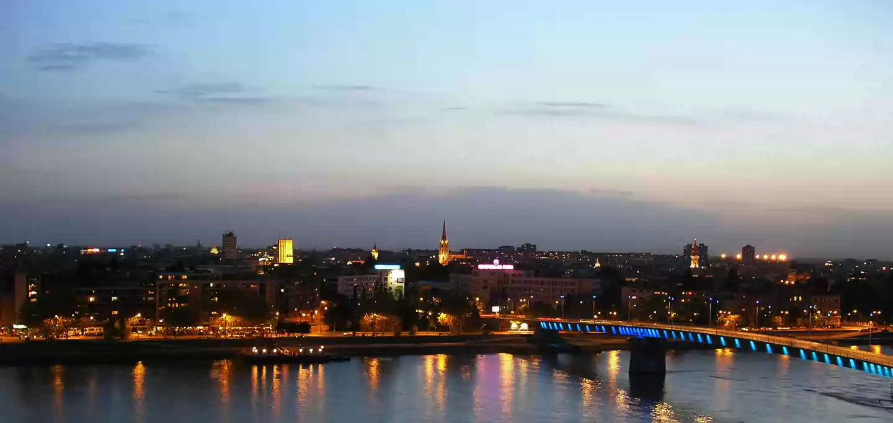

SRBIJA

Novi Sad je glavni administrativni centar Autonomne Pokrajine Vojvodine. Na području današnjeg Novog Sada još u praistoriji postojala su ljudska
naselja. Zasađen u basenu nekadašnjeg mora, u Panonskoj niziji, otet od močvarnog tla, nalazi se na sudaru evropskih i balkanskih kultura čije je
pomirenje uvek bio.
Od 1692. do 1780. na desnoj obali Dunava, u doba Austrougarske, izgrađena je Petrovaradinska tvrđava, jedan od najpoznatijih fortifikacionih objekata
u Evropi. Grad Novi Sad su osnovale vešte trgovačke i vredne zanatlijske ruke koje su službovale na Petrovaradinskoj tvrđavi. Dvanaest vojnika,
dvadeset pekara, mesara i drugih zanatlija ostali su upisani kao osnivači današnjeg grada. Od kada je bogati sloj Novosađana 1748. od austrougarske
carice Marije Terezije otkupio privilegiju izuzimanja iz feudalne komorsko-graničarske uprave, sloboda i nezavisnost postaju temelji na kojima će se
odvijati privredni i kulturni rast grada.
Novi Sad je prepoznatljiv po mešavini mnogobrojnih kultura. Dalja i bliža prošlost pokazuju da su Novosađani uvek poštovali trajne ljudske vrednosti:
znanje, rad, posvećenost, miroljubivost, tolerantnost i umerenost kao temeljne odrednice napretka. Sve to izdvaja Novi Sad kao jedinstvenu sredinu
specifičnu po gostoljubivosti, višejezičnosti i otvorenosti. Njegovi žitelji, njih oko 300.000, crpe životnu energiju od Dunava, reke koja je oblikovala
njihov temperament i obrise njihovog grada.
Kontinuitet kulturnog razvoja grada ogleda se kroz trajanje i razvoj institucija nacionalnog značaja, kao što su Matica srpska, Srpsko narodno
pozorište i dr. Na Petrovaradinskoj tvrđavi turisti mogu da posete Muzej grada Novog Sada u kome se nalazi „Izložbeni depo Odeljenja za kulturnu
istoriju“, stalna postavka koja pokazuje život grada od prve polovine 18. do sredine 20. veka, kao i Planetarijum sa opservatorijumom. Gosti koji
dođu u Novi Sad mogu da pogledaju i bogate zbirke u Muzeju Vojvodine, Zavodu za zaštitu prirode (prirodnjačka zbirka ima 60.000 eksponata), Galeriji
Matice srpske (preko 7.000 umetničkih dela), Galeriji likovne umetnosti, sa poklon zbirkom Rajka Mamuzića (koja obuhvata kolekciju srpskog likovnog
slikarstva u drugoj polovini 20. veka), a tu su i Zbirka strane umetnosti, Spomen zbirka Pavla Beljanskog (sa vrhunskim delima srpskog slikarstva iz
prve polovine 20. veka), Zavičajna zbirka u Sremskim Karlovcima, Spomen zbirka „Jovan Jovanović Zmaj“ u Sremskoj Kamenici i dr.
Novi Sad je grad manifestacija kulture i festivala, kao što su: Sterijino pozorje, Zmajeve dečje igre, Novosadske muzičke svečanosti, Međunarodni džez
festival, Festival filma i medija „Cinema City“, Internacionalni festival alternativnog pozorišta – Infant, Medunarodni festival video-umetnosti –
Videomedeja, Dunavska TID regata, Međunarodni sajam poljoprivrede, Međunarodni sajam lova, ribolova, sporta, turizma i nautike „Lorist“, najveći
muzički festival u jugoistočnoj Evropi – Exit…
Novosadski univerzitet ima 19 fakulteta i specijalizovane katedre na kojima se nastava održava na jezicima nacionalnih manjina ili je njihovom
izučavanju namenjena.
Zahvaljujući odličnim uslovima za vinogradarstvo fruškogorski vinogradi još od srednjeg veka ulaze u red najznačajnijih u srednjoj Evropi. Na području
Fruške gore postoje tri centra za proizvodnju vina: Petrovaradin sa Sremskim Karlovcima, Irig i Erdevik.
Nedaleko od Novog Sada nalazi se Nacionalni park „Fruška gora“ sa staništima velikog broja životinjskih vrsta. Pored kompleksa šuma, vrednih ekosistema
i geomorfoloških celina na Fruškoj gori se nalaze čuveni fruškogorski manastiri, veliki broj izletišta: Iriški venac, Zmajevac, Andrevlje, Koruška, kao
i jezera Ledinačko, Međeš, Borkovac…
U priobalju Dunava, u blizini Novog Sada, nalazi se Koviljsko-petrovaradinski rit, značajno stanište ptica, od kojih su neke registrovane kao retke i
ugrožene vrste: Početkom juna svake godine u Koviljsko-petrovaradinskom ritu organizuje se tradicionalni foto-safari.